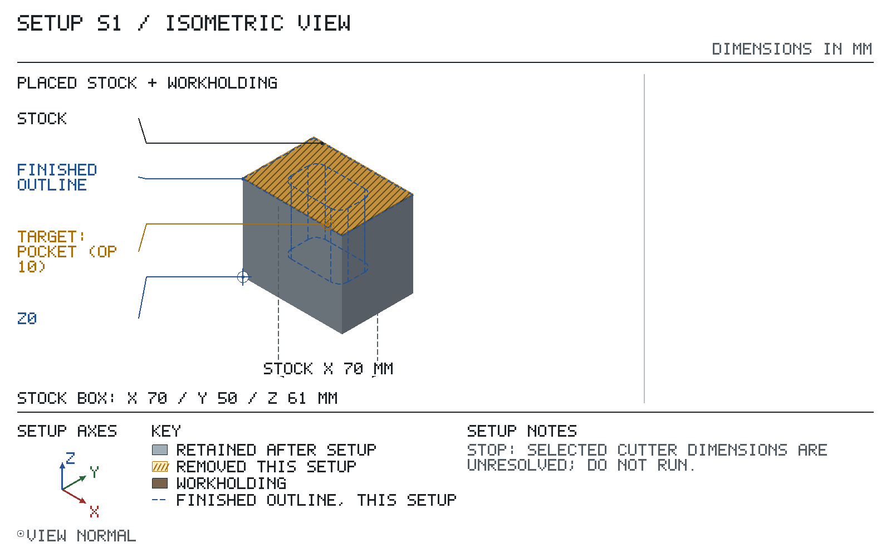
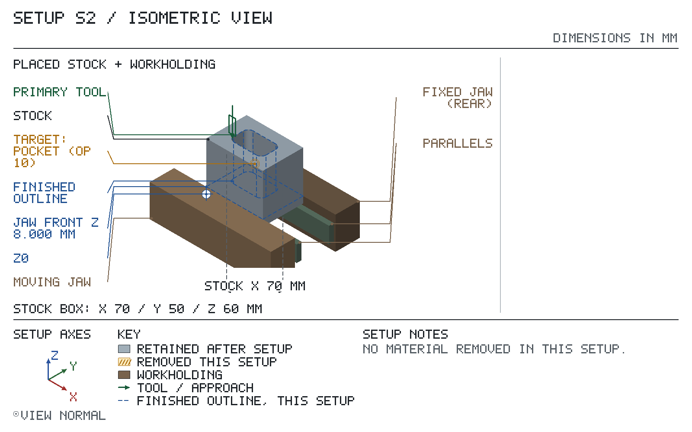

✗ STOP — do not run until resolved:
Drawing revision not confirmed — match the print revision first.
Setups S1, S2: STOP items on the setup page — do not run a setup until its STOPs are cleared.
Drawing material: ? not stated.
Speeds / feeds: no cited source — every op without a speed is a STOP.
DRO resolution: mill 0.001 mm (resolution not in the shop list: default grid). DRO targets print on this grid.
Stock: rectangular bar 70.000 × 50.000 × 61.000 long. Authored 70 x 50 x 61 mm supply: 1 mm top allowance over the synthetic 60 mm block; the other five outer surfaces are supplied as-is. S1 declares a numeric clearing volume, not CAM proof.
| setup | starts from | machine | holding |
|---|---|---|---|
| S1 | the stock blank | mill | STOP: not chosen |
| S2 | part as it arrives from Setup S1 | mill | vise |
| feature | limits |
|---|---|
| no toleranced requirement | |
| all edges | ? edge break not on the drawing; plan breaks edges 0.000 mm max |
T# = tool number in that setup's TOOLS table. EM = endmill.
Sign off: __________ First article / measured results: ____________________
✗ STOP — do not run until resolved:
Op 10 — no starting speed / feed
Op 10 — no Z target
? Not verified by the planner — confirm at the machine:
tool access (op 10); consistency; coordinates; cutter engagement (op 10); machine envelope; holding clearance; headroom and clearance; holding details; tool reach (op 10); starting speeds / feeds (op 10); chuck / collet size; thin walls under clamping; tool / holder fit (op 10); axis travel; vise grip; DRO zero check.
Synthetic rough preparation clears the top allowance and pocket before S2. The preparation cutter diameter and authored zero leave are declared; its other dimensions, holder and preparation holding remain measurement debt.
Starts from: the stock blank — top Z ? not set, bottom Z ? not set.
| grip length mm |
|---|
| ? not set |
Coolant: none.
| T | tool | insert / size / material | holder / station | ops |
|---|---|---|---|---|
| T1 | 8 mm EM | Ø8.000 | — | 10 |
| axis | touch / pick up | Axis Set | check jog | must read | if reversed |
|---|
| SETUP S1 — sheet 1 (continued): operations | ||||||||
|---|---|---|---|---|---|---|---|---|
| op | do | feature | tool | rpm | feed | Z tip | direction | inspection: limit, gauge |
| 10 | rough pocket, leave 0.000 mm per side | T1 | STOP | STOP | STOP: Z target not set | ? | — | |
Remove only outside-finished material in this declared setup-frame box. Floor coverage belongs to this prep claim, not to the wall-finishing poses. | ||||||||
Sign off: __________ First article / measured results: ____________________

? Not computed — check at the machine: spindle-to-table room (holding height not known); X travel; Y travel; tool stickout and headroom.
| op | tool | closest obstacle | clearance mm | action |
|---|---|---|---|---|
| 10 | T1 | — | ? | holding beside the cut: not computed — check at the machine |
✗ STOP — do not run until resolved:
Op 10 — no starting speed / feed
? Not verified by the planner — confirm at the machine:
consistency; coordinates; cutter engagement (op 10); machine envelope; headroom and clearance; starting speeds / feeds (op 10); axis travel; DRO zero check.
Top face up on 20 mm parallels; jaws along X clamp the 50 mm width across Y.
Starts from: part as it arrives from Setup S1 — top (pocket) at Z 60.000, bottom at Z 0.000.
| grip length mm | jaw top above parallels mm | work top above jaw tops mm | jaw centre at X | parallels at (X, Y) |
|---|---|---|---|---|
| 6.000 | 8.000 | 52.000 | 35.000 | (35.000, 5.000); (35.000, 45.000) |
Coolant: none.
| T | tool | insert / size / material | holder / station | ops |
|---|---|---|---|---|
| T1 | 8 mm EM | Ø8.000, flute 19.000, 4 flutes, HSS | R8 collet | 10 |
| axis | touch / pick up | Axis Set | check jog | must read | if reversed |
|---|
| SETUP S2 — sheet 1 (continued): operations | ||||||||
|---|---|---|---|---|---|---|---|---|
| op | do | feature | tool | rpm | feed | Z tip | direction | inspection: limit, gauge |
| 10 | finish pocket | T1 | STOP | STOP | Z → 15.000 | climb | — | |
| TIP 5.000 BELOW JAW TOP — STOP | ||||||||
Sign off: __________ First article / measured results: ____________________

? Not computed — check at the machine: spindle-to-table room (holding height not known); X travel; Y travel; tool stickout and headroom.
| op | tool | closest obstacle | clearance mm | action |
|---|---|---|---|---|
| 10 | T1 | jaw tops below the tool tip | -5.000 | STOP: the tip goes below the jaw tops; holding beside the cut: not computed — check at the machine |